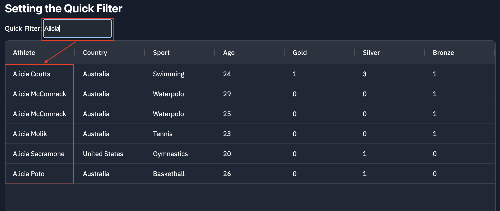
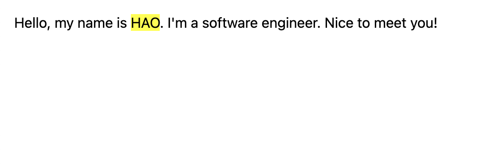
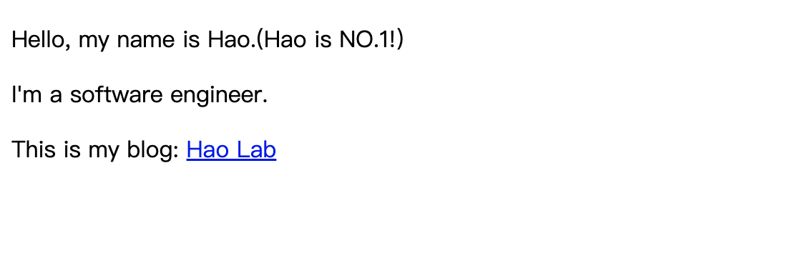
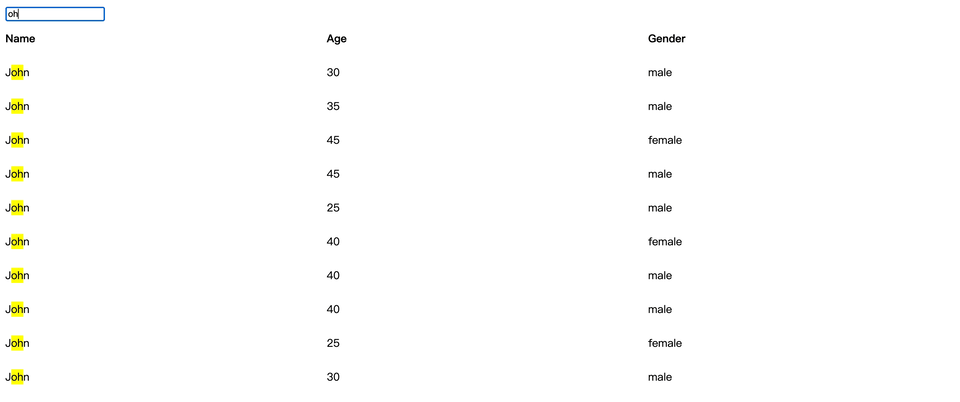

資料表格經常會有搜尋關鍵字的功能，當使用者在搜尋框輸入特定關鍵字時，資料表格會將符合該關鍵字的資料過濾出來，熱門的資料表格套件都有提供相關功能，像是：DataTables、Ag Grid 等。以下圖為例，Ag Grid 的 Quick Filter 功能可以讓使用者針對整個資料表格進行關鍵字查詢：

這個功能很方便，不過面對較複雜、欄位較多的資料表格時，就比較難一眼看出是哪個欄位有符合該關鍵字查詢。於是就出現了 高亮(Highlight) 關鍵字的搜尋功能，當使用者在輸入框輸入特定關鍵字時，資料表格內符合該關鍵字的文字會像使用 Ctrl + F 的搜尋方式一樣 加上底色，來強調文字。
傳統的 Highlight 解法
要做到上述 Highlight 最直覺的做法是 在符合關鍵字的文字周圍動態插入 span 元素，假如本來的結構如下：
1
2
3
4
| <div class="row">
<div class="cell">John</div>
<div class="cell">28</div>
</div>
|
當在輸入框搜尋關鍵字「Jo」時，會抓取所有欄位的元素，並將符合「Jo」的文字包在 <span> 內再以 CSS 的 class 來將其上底色：
1
2
3
4
| <div class="row">
<div class="cell"><span class="highlight">Jo</span>hn</div>
<div class="cell">28</div>
</div>
|
這種方式在每次更新表格時，會新增或移除大量的 DOM 元素，造成瀏覽器頻繁進行 佈局(Layout) 與 繪製(Paint) 進而影響渲染效能，在複雜、 虛擬捲軸(Virtual Scroll) 的情境下，更容易因此導致明顯的卡頓與資源消耗。
Custom CSS Highlight API
Custom CSS Highlight API 可以讓開發者在不改變 DOM 結構的情況下，以 JavaScript 結合 CSS ::highlight(name) 偽元素來樣式化文字。要使用該 API 共有 4 個步驟：
- 針對要 Highlight 的文字內容用
Range 物件標示出來。
- 建立
Highlight 物件來管理這些要 Highlight 的 Range。
- 將
Highlight 物件註冊在 HighlightRegistry 下，註冊的名稱需與 ::highlight(name) 偽元素定義的 name 相同。
- 使用
::highlight(name) 偽元素來定義 Highlight 的樣式。
下方是一段套用 Custom CSS Highlight API 的程式碼：
1
2
3
4
5
6
7
8
9
10
11
12
13
14
15
16
17
18
19
20
21
22
23
24
25
| <style>
::highlight(keyword) {
background-color: yellow;
}
</style>
<div class="description">
Hello, my name is HAO. I'm a software engineer. Nice to meet you!
</div>
<script>
const description = document.querySelector('.description');
const textNode = description.firstChild;
const range = document.createRange();
range.setStart(textNode, 21);
range.setEnd(textNode, 24);
const highlight = new Highlight();
highlight.add(range);
CSS.highlights.set("keyword", highlight);
</script>
|
可以看到 HAO 的底色變成黃色了：

補充：這裡有 Demo 可以參考。
如果要清除 Highlight，可以將註冊於 HighlightRegistry 的 Highlight 物件清除：
1
| CSS.highlights.delete("keyword");
|
Tree Walker
從上方 Custom CSS Highlight API 的範例來看，是固定從某個 DOM 節點找到特定的文字節點來套用 Highlight 效果，但在表格搜尋時不太可能這麼做，原因有很多，舉例來說，可能會有動態欄位的情境，也可能會有 Virtual Scroll 的設計。因此，會需要有一個方式去動態找出我們要的文字節點，也就是本節要介紹的 createTreeWalker。
createTreeWalker 是一個可以幫助開發者遍歷 DOM Tree 的 API，該 API 會回傳一個 TreeWalker 物件，透過該物件讓開發者用高效率的方式在 DOM Tree 中移動、過濾、查找所需的節點。createTreeWalker 有三個參數：
root：一個 Node 物件，即要遍歷子樹的根節點。whatToShow：用來指定要遍歷的節點類型，帶入的值為 NodeFilter 常數組合而成的位掩碼，預設值為 NodeFilter.SHOW_ALL。常見的選項值如下：
NodeFilter.SHOW_ALL：所有節點。NodeFilter.SHOW_TEXT：僅顯示文字節點。NodeFilter.SHOW_ELEMENT：僅顯示元素節點。
filter：自定義的 NodeFilter，是一個需要實作 acceptNode(node: Node) 的物件，透過撰寫判斷邏輯來決定回傳值為 NodeFilter.FILTER_ACCEPT、NodeFilter.FILTER_SKIP 或 NodeFilter.FILTER_REJECT。以下是這三個參數代表的意義：
NodeFilter.FILTER_ACCEPT：表示此節點是被接受的。NodeFilter.FILTER_SKIP：表示此節點會被過濾，但子節點不會被過濾掉。NodeFilter.REJECT：表示此節點與其子節點都會被過濾。
下方是使用 TreeWalker 遍歷節點的範例程式碼，會將文字帶有 HAO 的地方轉成 Hao：
1
2
3
4
5
6
7
8
9
10
11
12
13
14
15
16
| <div class="description">
<p>Hello, my name is HAO.<span>(HAO is NO.1!)</span></p>
<p>I'm a software engineer.</p>
<p>This is my blog: <a href="https://hao0731.github.io" target="_blank">HAO Lab</a></p>
</div>
<script>
const root = document.querySelector('.description');
const treeWalker = document.createTreeWalker(root, NodeFilter.SHOW_TEXT);
while(treeWalker.nextNode()) {
const index = treeWalker.currentNode.nodeValue?.indexOf("HAO") ?? -1;
if (index > -1) {
treeWalker.currentNode.data = treeWalker.currentNode.data.replaceAll("HAO", "Hao");
}
}
</script>
|
可以看到 HAO 被轉換成 Hao 了：

補充：這裡有 Demo 可以參考。
高效能 Highlight 解法
接下來，可以結合 Custom CSS Highlight API 與 createTreeWalker 來實現 Highlight 表格搜尋關鍵字的功能。為了方便會使用 Angular 19 進行開發。
注意：這裡會直接跳過專案初始化的步驟，並且會依賴 Angular Material 的 CDK 來實現 Virtual Scroll。
下方是範例程式碼，先將表格內的資料與資料結構定義出來：
1
2
3
4
5
6
7
8
9
10
11
12
13
14
15
16
17
18
| export type Item = {
name: string;
age: number;
gender: string;
};
export function generateItems(): Array<Item> {
const names = ['John', 'Jane', 'Jack', 'Jill', 'James'];
const ages = [25, 30, 35, 40, 45];
const genders = ['male', 'female'];
return Array.from({ length: 10000 }).map(() => {
const name = names[Math.floor(Math.random() * names.length)];
const age = ages[Math.floor(Math.random() * ages.length)];
const gender = genders[Math.floor(Math.random() * genders.length)];
return { name, age, gender };
});
}
|
接下來，要準備一個 Pipe 來將符合關鍵字查詢的資料過濾出來以利顯示在畫面上：
1
2
3
4
5
6
7
8
9
10
11
12
13
14
15
16
17
18
19
20
| import { Pipe, PipeTransform } from '@angular/core';
import { Item } from './item';
@Pipe({
name: 'filterItem',
standalone: true,
pure: true,
})
export class FilterItemPipe implements PipeTransform {
transform(items: Array<Item>, keyword: string) {
if (!keyword) {
return items;
}
return items.filter((item) =>
Object.values(item).some((value) =>
new RegExp(`${keyword}`).test(value.toString())
)
);
}
}
|
接著，新增一個全域的 ::highlight(name) 來定義底色：
1
2
3
| ::highlight(search-keyword-highlight) {
background-color: yellow;
}
|
最後，實作 SearchTableComponent，提供一個輸入框來搜尋關鍵字，並在搜尋時，透過 FilterItemPipe 將資料過濾出來，再透過 effect 偵測 keyword 的變化來觸發上色邏輯，這裡還需要特別處理 Virtual Scroll 的情境，當表格捲動時，需要重新觸發上色邏輯，避免新長出來的 DOM 沒有正確地上色：
1
2
3
4
5
6
7
8
9
10
11
12
13
14
15
16
17
18
19
20
21
22
23
24
25
26
27
28
29
30
31
32
33
34
35
36
37
38
39
40
41
42
43
44
45
46
47
48
49
50
51
52
53
54
55
56
57
58
59
60
61
62
63
64
65
66
67
68
69
70
71
72
73
74
75
76
77
78
79
80
81
82
83
84
85
86
87
88
89
90
91
92
93
94
95
96
97
98
99
100
101
102
103
104
105
106
107
108
109
110
111
112
113
114
115
| import { ChangeDetectionStrategy, Component, effect, inject, signal } from '@angular/core';
import { ScrollingModule } from '@angular/cdk/scrolling';
import { FormControl, ReactiveFormsModule } from '@angular/forms';
import { toSignal } from '@angular/core/rxjs-interop';
import { DOCUMENT } from '@angular/common';
import { generateItems } from './item';
import { FilterItemPipe } from './filter.pipe';
@Component({
selector: 'app-search-table',
standalone: true,
template: `
<input [formControl]="keywordControl" type="text" placeholder="Search..." />
<div class="table-row">
<div class="table-header">Name</div>
<div class="table-header">Age</div>
<div class="table-header">Gender</div>
</div>
<cdk-virtual-scroll-viewport
class="table-container"
[itemSize]="itemSize()"
(scrolledIndexChange)="onScrolled()"
>
<div *cdkVirtualFor="let item of items() | filterItem : keyword()" class="table-row">
<div class="table-cell">{{ item.name }}</div>
<div class="table-cell">{{ item.age }}</div>
<div class="table-cell">{{ item.gender }}</div>
</div>
</cdk-virtual-scroll-viewport>
`,
styles: `
.table-container {
height: 500px;
width: 100%;
}
.table-row {
height: 50px;
display: flex;
align-items: center;
>.table-cell {
flex: 1;
}
>.table-header {
flex: 1;
font-weight: bold;
}
}
`,
imports: [ScrollingModule, ReactiveFormsModule, FilterItemPipe],
changeDetection: ChangeDetectionStrategy.OnPush,
})
export class SearchTableComponent {
private readonly _document = inject(DOCUMENT);
protected readonly itemSize = signal(50);
protected readonly items = signal(generateItems());
protected readonly keywordControl = new FormControl<string>('', { nonNullable: true });
protected readonly keyword = toSignal(this.keywordControl.valueChanges, { initialValue: '' });
private readonly HIGHLIGHT_CLASS = 'search-keyword-highlight';
private debouncedHighlightId: number | null = null;
private readonly highlight = effect(() => {
this.debouncedApplyHighlight(this.keyword());
});
protected onScrolled() {
this.debouncedApplyHighlight(this.keyword());
}
private debouncedApplyHighlight(keyword: string) {
if (this.debouncedHighlightId) {
cancelAnimationFrame(this.debouncedHighlightId);
}
this.debouncedHighlightId = requestAnimationFrame(() => {
this.applyHighlight(keyword);
this.debouncedHighlightId = null;
});
}
private applyHighlight(keyword: string) {
CSS.highlights.delete(this.HIGHLIGHT_CLASS);
if (!keyword) {
return;
}
const highlight = new Highlight();
this._document.querySelectorAll('.table-cell').forEach((cell) => {
const walker = this._document.createTreeWalker(cell, NodeFilter.SHOW_TEXT);
while (walker.nextNode()) {
const idx = walker.currentNode.nodeValue?.indexOf(keyword) ?? -1;
if (idx > -1) {
const range = this._document.createRange();
range.setStart(walker.currentNode, idx);
range.setEnd(walker.currentNode, idx + keyword.length);
highlight.add(range);
}
}
});
CSS.highlights.set(this.HIGHLIGHT_CLASS, highlight);
}
}
|
可以看到在搜尋時，符合關鍵字的欄位會將底色變成黃色：
